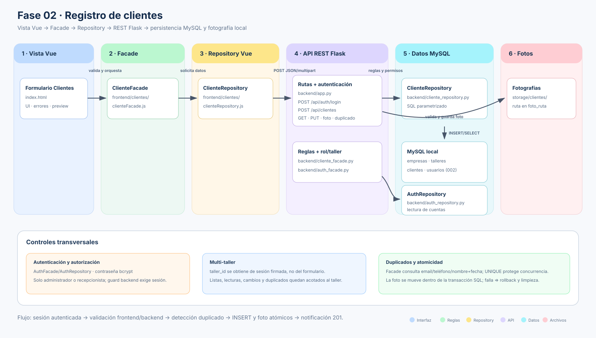

Fase 02 · Componentes de registro de clientes
Diagrama manual derivado de los componentes presentes en el repositorio. El flujo de sesión del login se indica como pendiente.

Diagrama manual derivado de los componentes presentes en el repositorio. El flujo de sesión del login se indica como pendiente.
